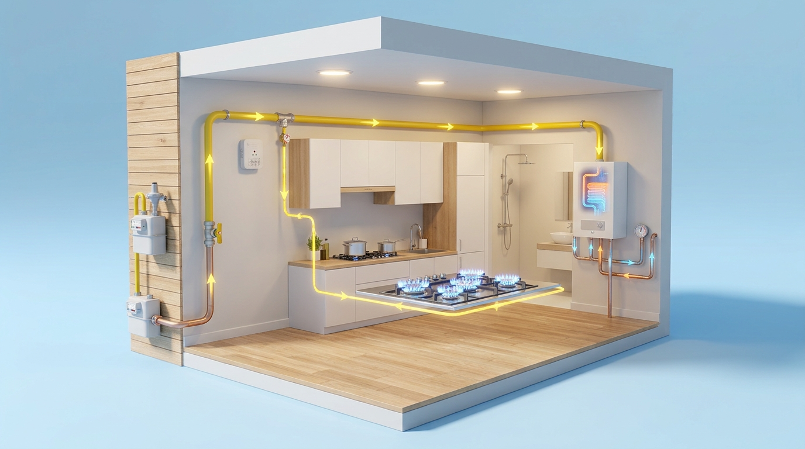

Avaliação da instalação
Analisamos as características do imóvel, o tipo de gás e os equipamentos abrangidos para definir o âmbito dos trabalhos.

Intervenções em instalações individuais e coletivas, com avaliação técnica e acompanhamento dos procedimentos necessários. Prestamos apoio a particulares e condomínios.
Pedir avaliação
Analisamos as características do imóvel, o tipo de gás e os equipamentos abrangidos para definir o âmbito dos trabalhos.
Avaliamos necessidades de instalação, alteração ou reparação de redes de gás. A solução e os procedimentos aplicáveis são esclarecidos antes da aceitação.
Apoiamos condomínios na preparação de intervenções e na articulação dos trabalhos necessários, segundo as características da instalação.
Avaliamos montagem e assistência a aparelhos, bem como sistemas de exaustão e evacuação dos produtos de combustão, no âmbito confirmado para a intervenção.
Apoiamos a preparação para inspeção e a articulação com entidades inspetoras quando aplicável. Este acompanhamento não é apresentado como substituto da inspeção exigível.
Esclarecemos a eventual necessidade de projeto, inspeção ou documentação e o acompanhamento previsto. Os responsáveis e os serviços incluídos são identificados na proposta.
Exemplo ilustrativo de uma habitação abastecida por rede: entrada, contador, tubagem de distribuição e ligações a aparelhos.
Sentido ilustrativo do gás — sem circuito de retorno
Contador e ponto de corte geral representados de forma simplificada.
Tubagem até aos aparelhos, com pontos de corte individuais assinalados.
Ligações, ventilação e evacuação de produtos da combustão adequadas ao tipo de aparelho.
04 Verificação e colocação em serviço
Intervenção por entidade instaladora habilitada. Inspeção por entidade inspetora de gás autorizada; o abastecimento depende de resultado aprovativo.
Esquema conceptual, sem escala: não é um projeto nem um guia de montagem. Traçado, materiais, dispositivos e condições de instalação dependem do projeto e das regras aplicáveis. Não representa todos os elementos de segurança.
Indique a localização, o tipo de imóvel, os aparelhos previstos e se existe instalação. Avaliamos os trabalhos e procedimentos necessários antes de apresentar a proposta.
Envie uma descrição da situação e eventuais relatórios disponíveis. O âmbito, o agendamento e a articulação com os intervenientes são confirmados após análise.
O relatório ajuda a avaliar os trabalhos de correção. A reparação e a eventual inspeção posterior são etapas distintas, com âmbito e custos a esclarecer.
Indique a marca e o modelo do aparelho existente e do equipamento pretendido. Avaliamos a compatibilidade com a instalação e os procedimentos aplicáveis.
A disponibilidade e o âmbito dependem da análise do pedido e das habilitações profissionais e empresariais aplicáveis. Não se anuncia emissão de certificados ou inspeções pela AssisteÁgua sem confirmação. O formulário e o contacto comercial não são serviços de emergência.
Indique a localidade, o equipamento ou instalação e o motivo do pedido. Confirmamos disponibilidade, agendamento e custos aplicáveis, incluindo deslocação e eventual diagnóstico. Os trabalhos e o preço são apresentados para aceitação.
Atendemos em Cascais, Estoril, Parede, Oeiras, Paço d’Arcos, Sintra, Amadora e Lisboa, mediante confirmação das condições do serviço.
Pode enviar fotografias para rpfassistencia@gmail.com, indicando o mesmo nome utilizado no pedido.
Cascais, Estoril, Parede, Oeiras, Paço d’Arcos, Sintra, Amadora e Lisboa.
Disponibilidade, agendamento e condições de deslocação sujeitos a confirmação.
Consultar zona de atendimentoA experiência prática é acompanhada por qualificações e formação técnica no Instituto Tecnológico do Gás (ITG), nas áreas indicadas pela nossa equipa.
Conhecer a equipa e a formação técnica